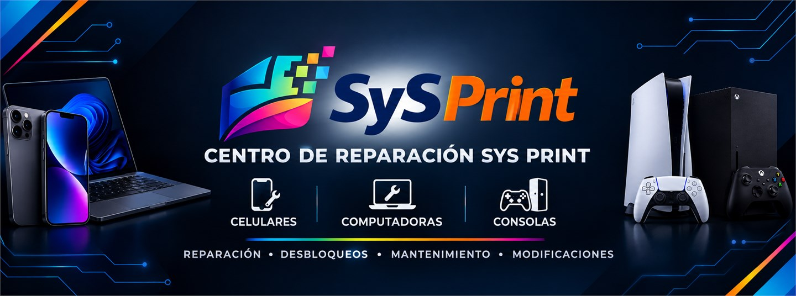

Computadoras
Atención para equipos que necesitan recuperar rendimiento, estabilidad o funcionamiento.
- Diagnóstico
- Reparación
- Mantenimiento
- Optimización
Centro de reparaciones
Reparación, mantenimiento, impresión y soporte técnico para que tus equipos vuelvan a trabajar contigo.
Llamadas y WhatsApp812 442 7052

Diagnóstico antes de reparar
Cotización previa
Atención personalizada
Pruebas antes de entregar
Soluciones claras
En SYS PRINT reunimos reparación, mantenimiento, impresión y asistencia técnica en un servicio pensado para resolver lo que necesitas, con comunicación clara en cada etapa.
Conoce nuestro procesoServicios principales
Atendemos los problemas cotidianos de tus dispositivos y te orientamos sobre el siguiente paso.
Atención para equipos que necesitan recuperar rendimiento, estabilidad o funcionamiento.
Revisión y soluciones para problemas físicos o de software en tu dispositivo.
Soporte para mantener la calidad y continuidad de tus trabajos de impresión.
Acompañamiento técnico para poner a punto tus herramientas digitales.
Impresión y papelería
Además de tecnología, te ayudamos a convertir documentos y proyectos en impresiones listas para lo que necesitas.
Solicitar informaciónApoyo para tus impresiones y entregas cotidianas.
Una alternativa práctica para materiales de trabajo y estudio.
Cuéntanos qué necesitas y te orientamos por WhatsApp.
Tecnología y soluciones
Desde el equipo hasta su configuración, cada revisión se enfoca en identificar el problema y buscar una solución útil.
Hablar con SYS PRINTLo que podemos revisar
La forma de trabajar
Comenzamos por entender el estado del equipo.
Te orientamos antes de continuar con el servicio.
Conoces el siguiente paso antes de autorizarlo.
Revisamos el funcionamiento después del trabajo realizado.
Cómo trabajamos
Revisamos el equipo y el problema reportado.
Te explicamos las opciones antes de avanzar.
Realizamos el trabajo acordado.
Comprobamos el funcionamiento del equipo.
Te mantenemos al tanto del cierre del servicio.
Preguntas frecuentes
¿Tienes un caso diferente? Escríbenos y cuéntanos qué sucede con tu equipo.
Contactar por WhatsAppSí. Contáctanos por WhatsApp o llamada y describe el problema para que podamos orientarte.
Sí. El diagnóstico permite revisar el equipo y definir el siguiente paso antes de continuar.
Sí. La cotización se comparte antes de avanzar con el servicio.
Sí. Escríbenos con los detalles de tu solicitud de impresión para orientarte.
Contacto
Cuéntanos qué necesitas. Puedes escribirnos por WhatsApp o llamarnos directamente.